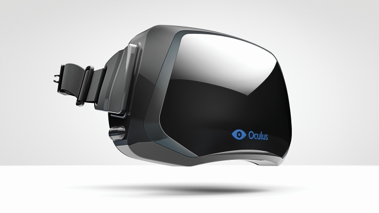

Conheça o Óculos Rift(){
Notícias

Oculus Rift
O sonho de entrar em uma realidade virtual pode estar mais próximo do que nunca com este aparelho que promete promover a sensação de estar literalmente dentro do jogo. É notável como a experiência consegue ser realista e diferente de tudo que os jogadores já experimentaram.
Oculus Rift é um equipamento de realidade virtual para jogos eletrônicos constituído de um sensor de movimentos que move a imagem 3D apresentada na tela LCD embutida de resolução 1280 x 800, conforme o usuário mexe sua cabeça para os lados, isso é possível porque os óculos possuem em sua carcaça uma combinação de acelerômetro, giroscópio e magnetômetro para acompanhar a orientação da cabeça do usuário.
O realismo é tão grande que é normal ver pessoas que estão testando o aparelho responderem aos estímulos dos óculos desviando a cabeça de algo que vem em sua direção ou firmando os pés no chão durante uma queda livre virtual.
Outros aspectos técnicos que favorecem o uso do Óculus Rift, são: o fato dele ser leve e confortável e ter um tempo de resposta curto entre os comandos e a reação do software. Por isso já estão sendo estudadas outras áreas de aplicação para o acessório como: medicina, arquitetura, construção civil e mercado imobiliário.
Contudo, algumas pessoas que testaram o aparelho, relataram que a sensação de náusea é muito intensa. Outro problema é o fato da tela LCD do protótipo ainda não ser em alta definição. Como todo protótipo, o Oculus Rift ainda precisa melhorar alguns aspectos importantes até chegar à sua versão final, que por sinal ainda não tem data de lançamento nem preço confirmados.
Referências:
Acessório de realidade virtual para games
Óculos de realidade virtual que pode mudar o modo como interagimos com os jogos
Óculos Rift- Wikipédia
Testamos os Óculos Rift
}